P001 · businessDr. Sales — إدارة المبيعات والأعمال
Dr. Sales — Sales & Business Management
المبيعات والمخزون والحسابات والموظفون في نظام واحد على أندرويد وويندوز، مع العمل دون إنترنت والمزامنة عند عودة الاتصال.
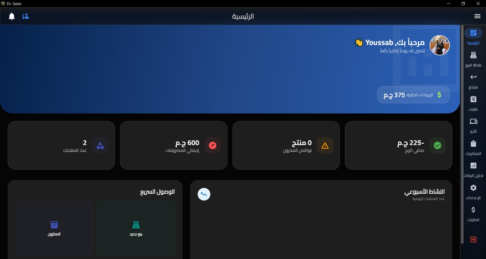
لوحة التحكم الرئيسية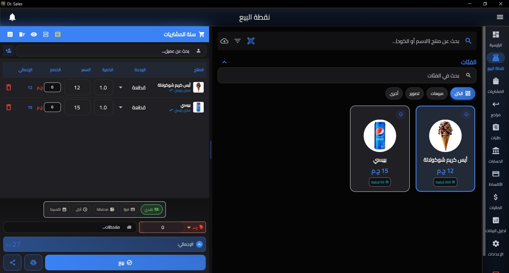
واجهة نقطة البيع والكاشيرDr. Sales يجمع دورة العمل اليومية للنشاط التجاري: المبيعات والمشتريات والمرتجعات، إدارة المخازن والجرد، حسابات العملاء والموردين، ومتابعة الإيرادات والمصروفات. يدعم البيع النقدي والآجل والتقسيط، ويربط متابعة الموظفين والمندوبين والفنيين بالرواتب والعمولات.
يمتد النظام إلى حجوزات المناسبات وإدارة جلسات السايبر والبلايستيشن وحساب وقتها وإضافة المنتجات إليها. ويتيح قراءة الباركود بكاميرا الهاتف وطباعة الفواتير بالبلوتوث، مع صلاحيات منفصلة وتقارير تساعد على متابعة النشاط.
الوظائف الأساسية
- إدارة المبيعات والمشتريات والمرتجعات
- المخزون والجرد وحسابات العملاء والموردين
- أندرويد وويندوز والعمل دون إنترنت
- المزامنة بين الأجهزة عند الاتصال
- الباركود وطباعة فواتير البلوتوث
- حجوزات وموظفون وتقارير وصلاحيات
زيارة موقع المشروع
دور الشركة: تطوير نظام متكامل للمبيعات والحسابات والمخزون، وتجربة العمل على أندرويد وويندوز، وواجهات المتابعة والتقارير.
English content
Sales, inventory, accounts and staff in one Android and Windows system, with offline operation and synchronization when connectivity returns.
Dr. Sales brings together daily business operations: sales, purchases, returns, stocktaking, customer and supplier accounts, and income and expense tracking. It supports cash, credit and installment sales, with staff, representative and technician workflows linked to payroll and commissions.
The system also covers event bookings and timed gaming sessions with additional products. Phone-camera barcode scanning, Bluetooth invoice printing, separate user permissions and business reports support day-to-day operations.
Key features
- Sales, purchases and returns
- Inventory, stocktaking and customer/supplier accounts
- Android, Windows and offline operation
- Synchronization across connected devices
- Barcode scanning and Bluetooth invoicing
- Bookings, staff, reports and permissions
Visit project website
Development of an integrated sales, accounting and inventory system, Android and Windows workflows, and monitoring and reporting interfaces.
Nexara — إدارة العيادة وحجز المواعيد
Nexara — Clinic Management & Booking
موقع للعيادة وتجربة حجز للمريض، مع واجهات للطبيب والسكرتارية لمتابعة المواعيد والعمل اليومي.
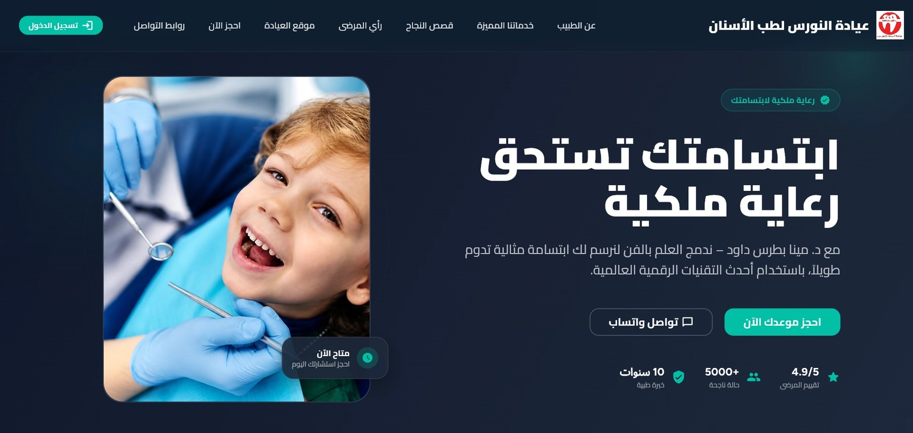
الصفحة الرئيسية لعيادة الطبيب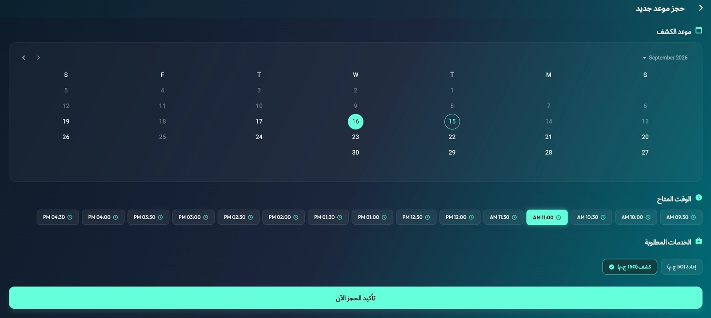
اختيار موعد حجز متاحمنصة تجمع الواجهة التعريفية للعيادة مع إدارة الحجز والمتابعة. تعرض معلومات الطبيب وخدمات العيادة وموقعها، وتتيح للمريض اختيار موعد متاح.
تتوزع التجربة بين واجهة المريض، ولوحة الطبيب لمتابعة العمل والكشوفات، ولوحة السكرتارية لتنظيم الحجوزات. تظهر في صور المصدر أيضًا أدوات تحليل النشاط ومتابعة الكشوفات والملاحظات.
الوظائف الأساسية
- عرض العيادة والطبيب والخدمات
- اختيار اليوم والموعد المتاح
- واجهة مستقلة للمريض
- لوحة للطبيب والسكرتارية
زيارة موقع المشروع
دور الشركة: تطوير الموقع التعريفي للعيادة ومسار الحجز وواجهات المريض والطبيب والسكرتارية.
English content
A clinic website and patient booking journey, with doctor and reception interfaces for appointments and daily operations.
A platform combining a clinic website with booking and follow-up workflows. It presents the doctor, clinic services and location, and lets patients select an available appointment.
The experience includes a patient interface, a doctor workspace for visits and practice activity, and a reception workspace for organizing bookings. Source screens also show activity analysis and visit notes.
Key features
- Clinic, doctor and service presentation
- Available day and time selection
- Patient workspace
- Doctor and reception workspaces
Visit project website
Development of the clinic website, appointment journey, and patient, doctor and reception interfaces.
James American School — إدارة المدرسة
James American School — School Management
نظام مكتبي لإدارة الحضور والانصراف والنقل المدرسي، وطباعة كارنيهات الطلاب وتذاكر الانصراف.
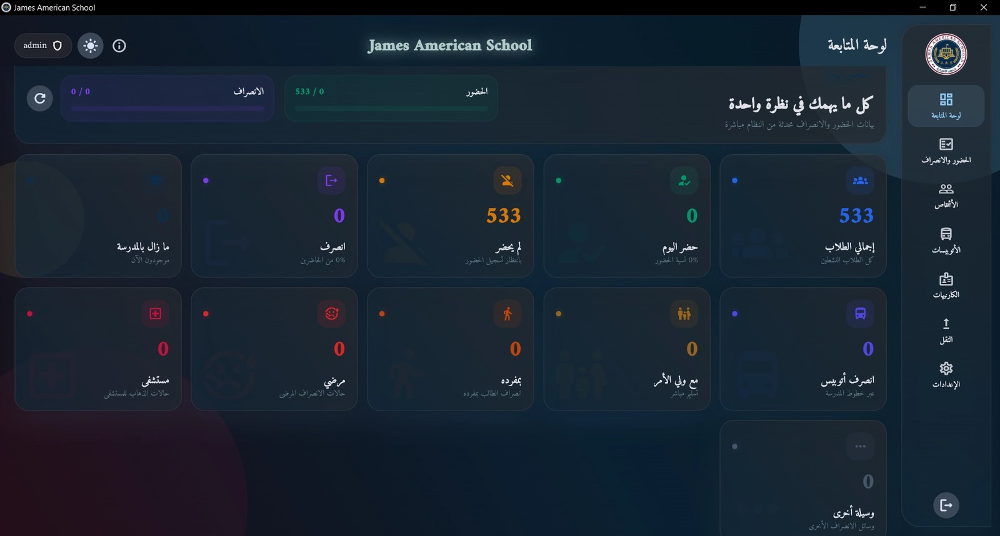
لوحة إدارة المدرسة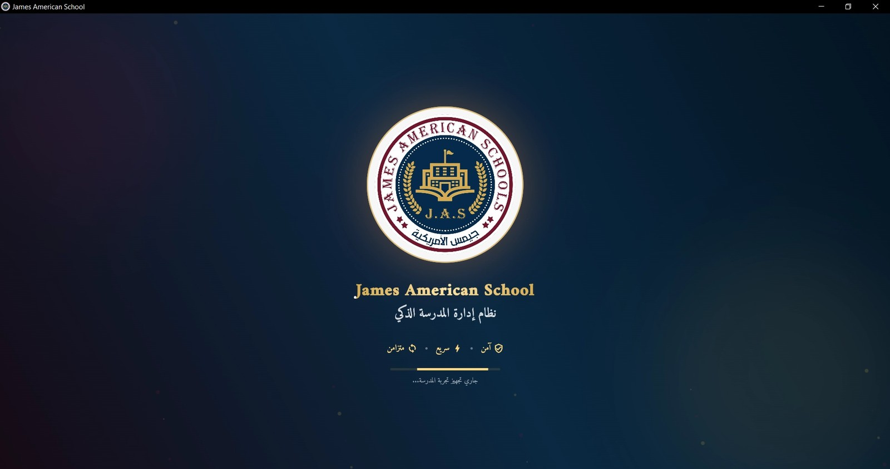
واجهة بدء تشغيل النظام المدرسينظام يجمع متابعة الحضور والانصراف مع تنظيم النقل المدرسي في واجهة عربية على ويندوز. يدير الطلاب والفصول والأتوبيسات، ويوفر لوحة عامة لمؤشرات اليوم.
تدعم أدوات الطباعة تصميم الكارنيهات والباركود وإصدار تذاكر انصراف حرارية. يوضح المصدر أن النظام يعمل دون إنترنت، بما يلائم إجراءات المدرسة اليومية.
الوظائف الأساسية
- الحضور والانصراف اليومي
- إدارة الطلاب والفصول والنقل
- كارنيهات وباركود وتذاكر حرارية
- تطبيق ويندوز يعمل دون إنترنت
زيارة موقع المشروع
دور الشركة: تطوير برنامج الإدارة المدرسية وواجهات الحضور والانصراف والنقل والطباعة.
English content
A desktop system for attendance, dismissal and school transport, with student cards and dismissal ticket printing.
A Windows system with an Arabic interface that connects attendance and dismissal with school transport. It manages students, classes and buses and provides a dashboard for daily activity.
Printing tools support card and barcode layouts and thermal dismissal tickets. The source describes offline operation for everyday school workflows.
Key features
- Daily attendance and dismissal
- Students, classes and transport
- Cards, barcodes and thermal tickets
- Offline Windows application
Visit project website
Development of the school management application and attendance, dismissal, transport and printing interfaces.
Quality Dental Lab — منصة معمل الأسنان
Quality Dental Lab — Dental Lab Platform
موقع يربط طبيب الأسنان بالمعمل، ويعرض المنتجات والخدمات ويوفر مسارًا لطلب التركيبات.
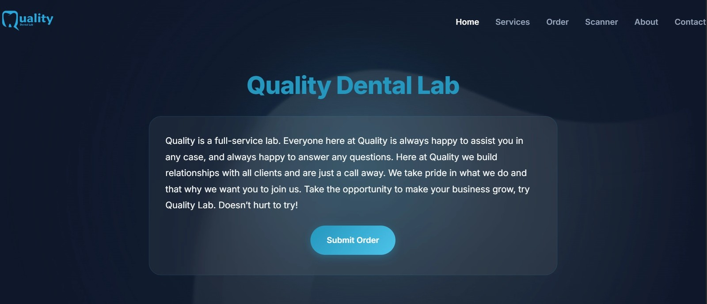
الصفحة الرئيسية لمعمل الأسنان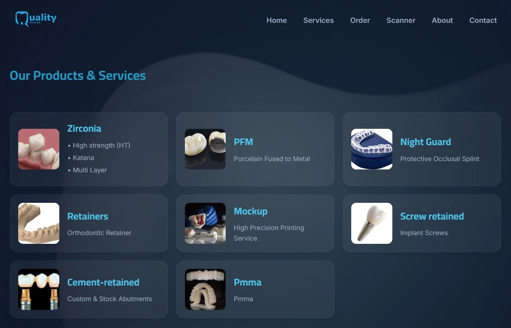
قائمة المنتجات والخدماتواجهة رقمية لمعمل الأسنان تجمع التعريف بالمعمل والخدمات مع نقطة واضحة لبدء الطلب. يعرض الموقع أنواع التركيبات والمنتجات، مثل الزركون والواقيات والتركيبات المرتبطة بالزرعات.
توضح صفحات الخدمات والتعريف والأسئلة الشائعة ما يقدمه المعمل، لتسهيل وصول الطبيب إلى الخدمة المطلوبة وبدء التواصل حول الحالة.
الوظائف الأساسية
- عرض منتجات وتركيبات المعمل
- مسار طلب من الطبيب إلى المعمل
- تعريف بالمعمل وأسئلة شائعة
زيارة موقع المشروع
دور الشركة: تطوير واجهات المعمل وعرض الخدمات والمنتجات ومسار طلب التركيبات.
English content
A website connecting dentists with the laboratory, presenting products and services and supporting restoration requests.
A dental laboratory website combining laboratory information and services with a clear order entry point. It presents restoration and product categories such as zirconia, night guards and implant-supported work.
Service, about and FAQ pages help dentists understand the laboratory offering and start a request.
Key features
- Laboratory products and restorations
- Dentist-to-laboratory requests
- Laboratory information and FAQs
Visit project website
Development of the laboratory website, service and product presentation, and restoration request journey.
أنا والقانون وثغراته — منصة خدمات قانونية
Me & Law — Legal Services Website
موقع لمكتب محاماة يعرض الخدمات القانونية ويتيح للموكل اختيار الخدمة وطلب الاستشارة.
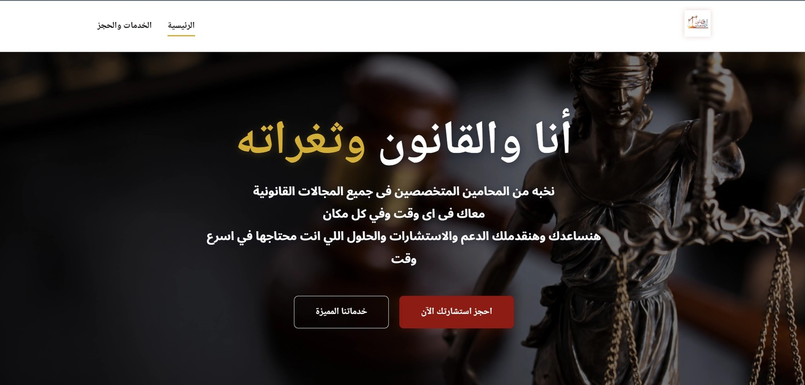
الواجهة الرئيسية للمكتب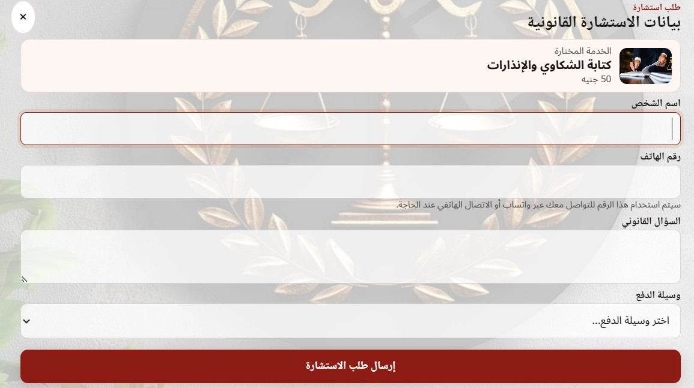
نموذج طلب الاستشارة القانونيةموقع يجمع الهوية التعريفية للمكتب مع رحلة طلب الخدمة القانونية. تعرض الواجهة الاستشارات وصياغة العقود والشكاوى والإنذارات ومذكرات الدفاع.
يختار الموكل الخدمة ثم يستكمل نموذج الطلب وبيانات التواصل والسؤال القانوني من واجهة واحدة واضحة.
الوظائف الأساسية
- عرض الخدمات القانونية
- اختيار الخدمة وطلب الاستشارة
- نموذج واضح لبيانات الطلب
زيارة موقع المشروع
دور الشركة: تطوير موقع المكتب وصفحات الخدمات ونموذج طلب الاستشارة.
English content
A law firm website presenting legal services and letting clients select a service and request a consultation.
A website connecting the firm’s public identity with a legal service request journey. It presents consultations, contract drafting, complaints, notices and defense memoranda.
Clients select a service and complete a request form with contact details and their legal question.
Key features
- Legal service presentation
- Service selection and consultation requests
- Structured request form
Visit project website
Development of the firm website, service pages and consultation request form.
X FRAME — متجر البراويز والهدايا
X FRAME — Frames & Gifts Store
متجر يجمع كتالوج البراويز والهدايا مع خيارات تخصيص المنتج ومتابعة الطلب وإدارة المتجر.
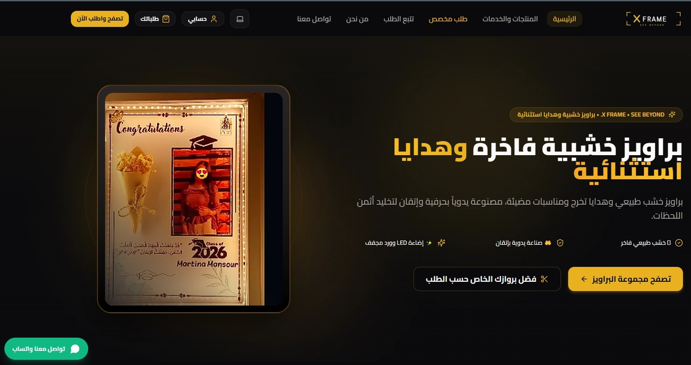
الصفحة الرئيسية لمتجر X FRAME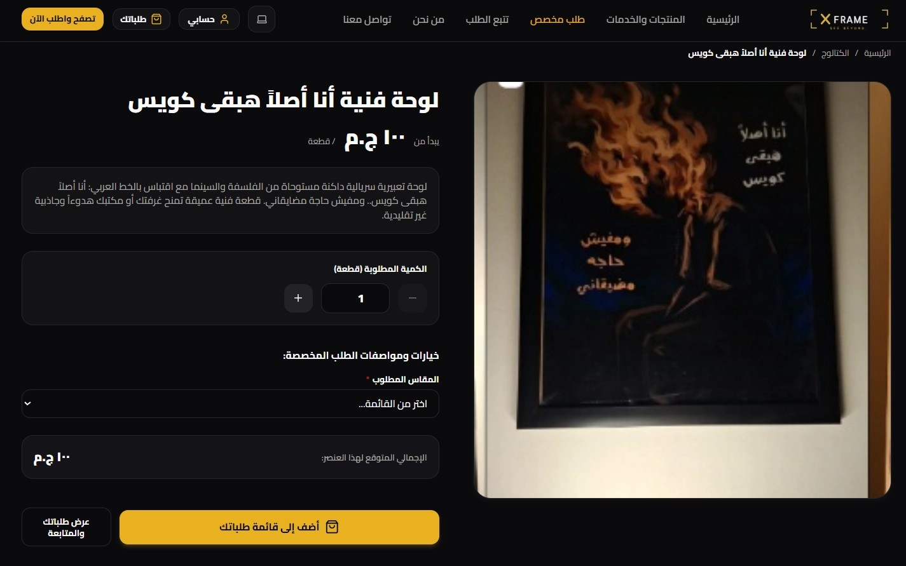
تفاصيل المنتج وخياراتهمتجر إلكتروني يربط العميل بالتاجر عبر عرض المنتجات وتفاصيلها وخيارات تخصيصها. يستطيع العميل تصفح الكتالوج واختيار المقاس أو الخيارات المتاحة وإضافة المنتج إلى الطلب.
تظهر صور المصدر مسار متابعة مراحل تنفيذ الطلب، إلى جانب لوحة لإحصائيات المتجر وإدارة الطلبات. تجمع التجربة بين العرض البصري للمنتج ومتابعته بعد الشراء.
الوظائف الأساسية
- كتالوج منتجات وتصنيفات
- خيارات تخصيص المنتج
- متابعة مراحل تنفيذ الطلب
- لوحة إحصائيات وإدارة الطلبات
زيارة موقع المشروع
دور الشركة: تطوير واجهات المتجر والكتالوج وتفاصيل المنتجات ومسار الطلب ولوحة الإدارة.
English content
A frames and gifts store combining a product catalogue, customization options, order tracking and store administration.
An online store connecting customers and merchants through product presentation, details and customization. Customers browse the catalogue, choose available options and add products to an order.
Source screens show order production stages, store statistics and order administration, connecting visual product discovery with post-purchase tracking.
Key features
- Product catalogue and categories
- Product customization options
- Order production tracking
- Statistics and order administration
Visit project website
Development of storefront, catalogue, product detail, order journey and administration interfaces.
يوساب وجدي — بورتفوليو شخصي
Youssab Wagdy — Personal Portfolio
موقع شخصي يعرض المهارات والمشاريع والخدمات وطرق التواصل بهوية بصرية موحدة.
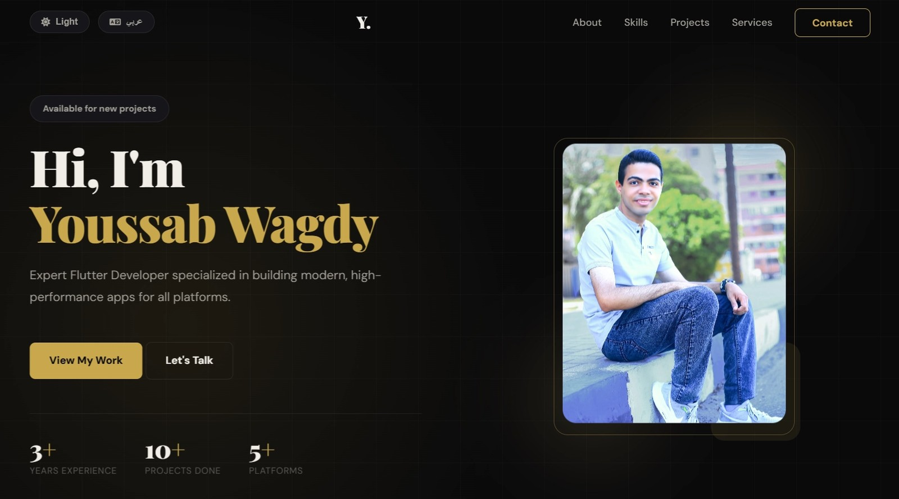
الواجهة الرئيسية للبورتفوليو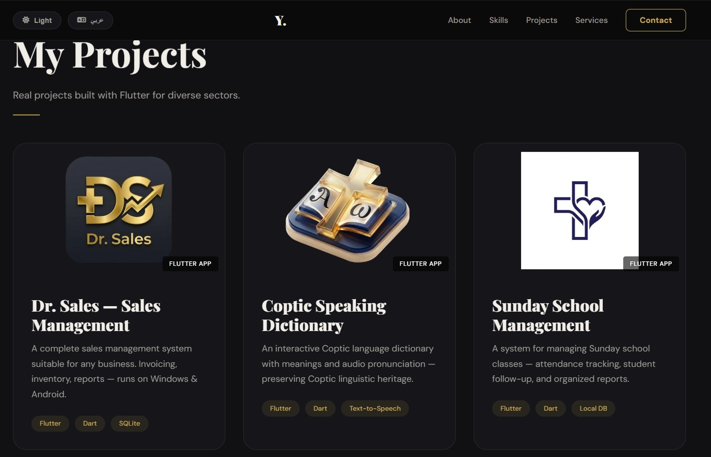
معرض الأعمال في البورتفوليوبورتفوليو احترافي يجمع التعريف بالمطور مع مهاراته وأعماله وخدماته. تستخدم الواجهة تدرجات داكنة ولمسات ذهبية، مع أقسام واضحة تساعد الزائر على الانتقال من التعرف على الخبرات إلى استعراض المشاريع والتواصل.
تتضمن التجربة العربية والإنجليزية وخيارات المظهر، مع بطاقات للأعمال ونموذج تواصل.
الوظائف الأساسية
- عرض المهارات والأعمال والخدمات
- تجربة عربية وإنجليزية
- خيارات المظهر وواجهة تواصل
زيارة موقع المشروع
دور الشركة: تطوير موقع البورتفوليو وأقسام التعريف والمهارات والأعمال والخدمات والتواصل.
English content
A personal website presenting skills, projects, services and contact channels through a consistent visual identity.
A professional portfolio bringing together the developer’s profile, skills, work and services. Dark surfaces and gold accents connect clear sections that guide visitors from experience to projects and contact.
The experience includes Arabic and English, theme options, project cards and a contact form.
Key features
- Skills, work and services
- Arabic and English experience
- Theme options and contact interface
Visit project website
Development of the portfolio website and profile, skills, projects, services and contact sections.
مدارس الأحد ومدرسة الشمامسة — إدارة الخدمة
Sunday School & Deacon School Management
نظام لتنظيم الخدمة والحضور والافتقاد، مع متابعة السلوك والتقييمات وتصميم الكارنيهات.
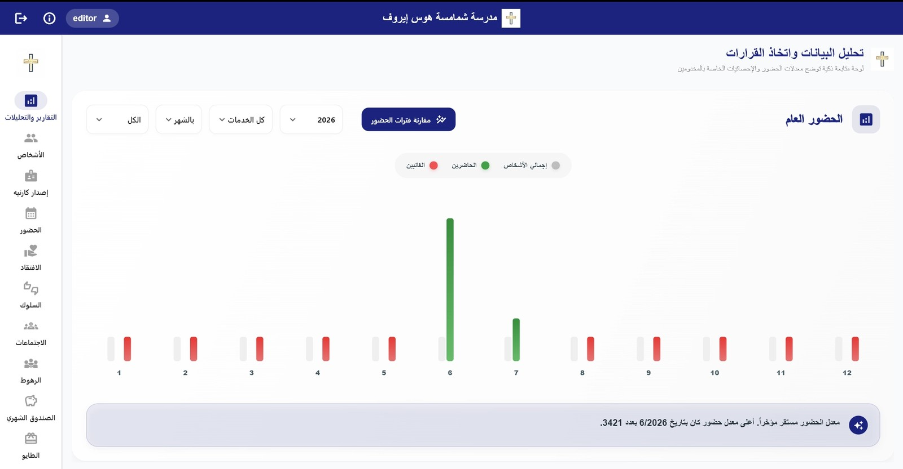
لوحة مؤشرات الحضور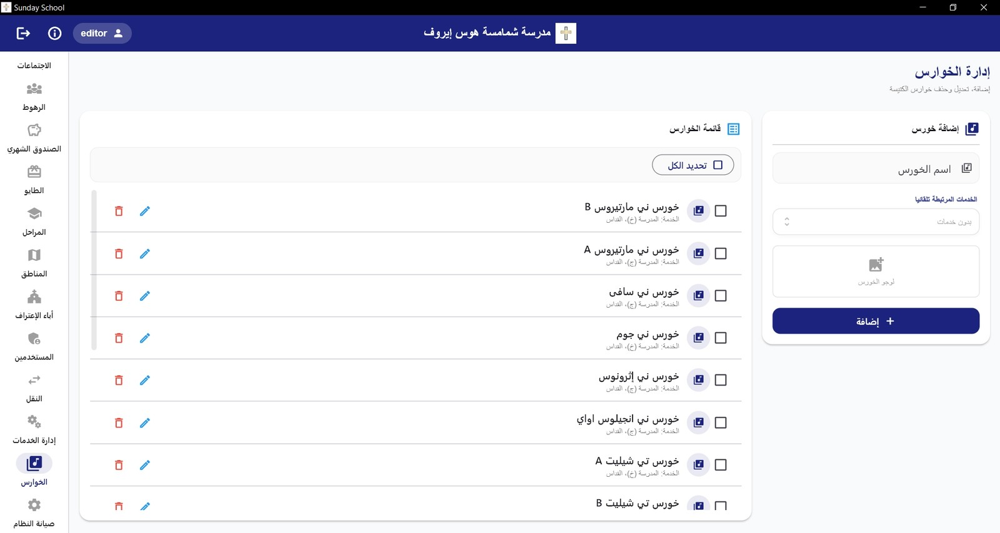
تصنيفات السلوك وتنظيمهابرنامج ينظم العمل داخل مدارس الأحد ومدرسة الشمامسة، ويجمع الحضور والغياب والافتقاد في نظام واحد. تتضمن الواجهات تنظيم المخدومين وسجل الحضور والتقييمات وتقارير الخدمة.
تظهر صور المصدر أدوات تصميم الكارنيهات، وتقييم الشمامسة، وتصنيف السلوك، ومتابعة الافتقاد بما يخدم التنظيم اليومي.
الوظائف الأساسية
- الحضور والغياب وتقارير الخدمة
- متابعة الافتقاد
- تقييمات وسلوك وتصميم كارنيهات
زيارة موقع المشروع
دور الشركة: تطوير برنامج تنظيم الخدمة وواجهات الحضور والتقييم والافتقاد وتصميم الكارنيهات.
English content
A service management system for attendance and pastoral visits, with behavior tracking, assessments and card design.
A system organizing Sunday school and deacon school work, bringing attendance, absence and pastoral visits into one workspace. Interfaces cover participants, attendance records, assessments and service reports.
Source screens include card design, deacon assessments, behavior categories and visit tracking for day-to-day organization.
Key features
- Attendance, absence and service reports
- Pastoral visit tracking
- Assessments, behavior and card design
Visit project website
Development of the service management system and attendance, assessment, pastoral visit and card design interfaces.
العضوية الكنسية — إدارة الأسر والخدمات
Church Membership — Families & Services
برنامج لإدارة الأسر والمناطق والافتقاد والمساعدات، مع أدوات لتنظيم خدمات الكنيسة.
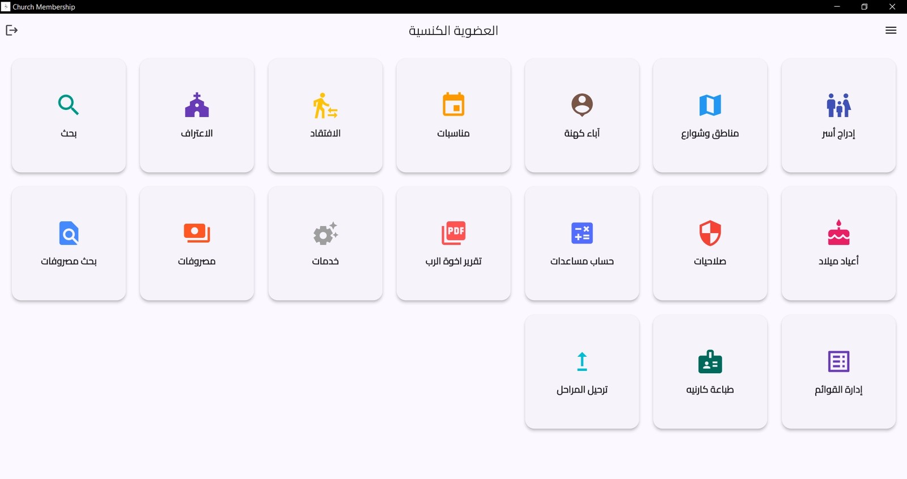
الواجهة الرئيسية ووحدات العضويةبرنامج يجمع إدارة الأسر والمناطق مع متابعة الافتقاد والخدمات والمساعدات. تعرض الواجهة الرئيسية وحدات واضحة للوصول إلى أقسام العمل بدل توزيع المتابعة بين سجلات منفصلة.
يوضح المصدر توفر نسختي ويندوز وأندرويد، مع أدوات للبحث والتقارير وتنظيم المسؤوليات داخل الخدمة.
الوظائف الأساسية
- إدارة الأسر والمناطق
- تنظيم الافتقاد والمساعدات
- نسختا ويندوز وأندرويد
زيارة موقع المشروع
دور الشركة: تطوير برنامج العضوية وواجهات إدارة الأسر والمناطق والخدمات والمتابعة.
English content
A system for families, areas, pastoral visits and assistance, with tools for organizing church services.
A system connecting family and area records with pastoral visits, services and assistance. The home screen provides clear modules for accessing workflows within a shared application.
The source describes Windows and Android versions, with search, reports and service organization tools.
Key features
- Family and area management
- Pastoral visits and assistance
- Windows and Android versions
Visit project website
Development of the membership system and family, area, service and follow-up interfaces.
Games Platform — منصة ألعاب الخدمة
Games Platform — Community Games
منصة ألعاب جماعية وأسئلة قابلة للتغيير، تجمع التحديات والنقاط وألعابًا مناسبة لأنشطة الخدمة.
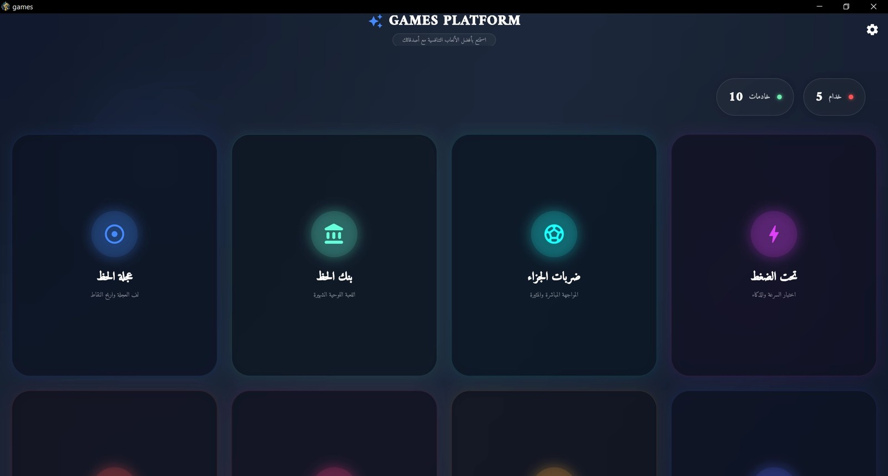
واجهة اختيار الألعاب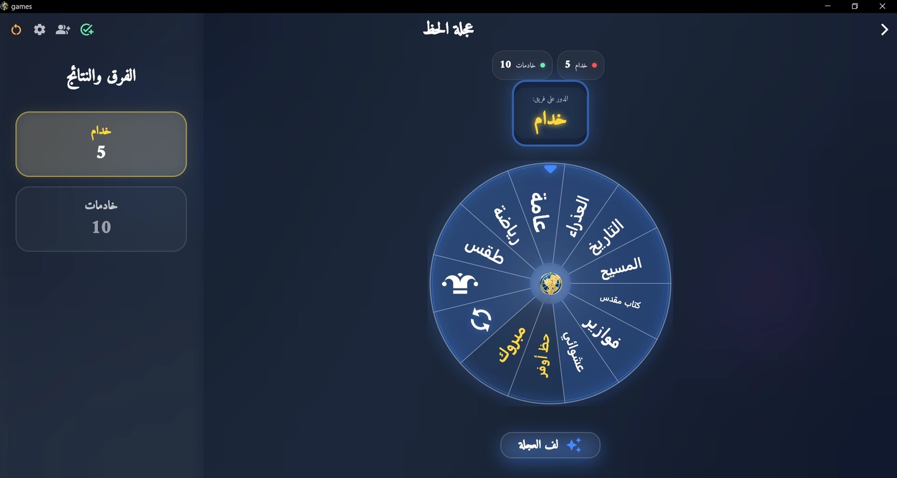
عجلة الحظ والنقاط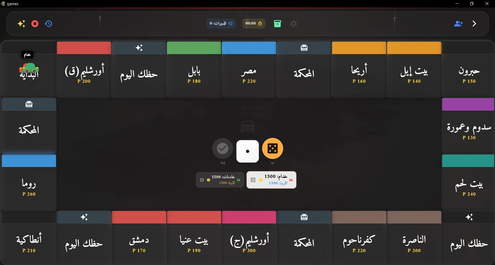
لعبة بنك الحظمنصة تجمع مجموعة من الألعاب في مكان واحد لاستخدامها في أنشطة الخدمة والمسابقات الجماعية. تتضمن صور المصدر عجلة الحظ وبنك الحظ والتحديات والأسئلة، مع عرض النقاط وواجهات لإعداد اللعبة.
إمكانية تغيير الأسئلة تمنح منظمي النشاط مساحة لتكييف المحتوى مع الفئة المشاركة وطبيعة المناسبة.
الوظائف الأساسية
- عدة ألعاب داخل منصة واحدة
- أسئلة قابلة للتغيير
- تحديات جماعية ومتابعة النقاط
زيارة موقع المشروع
دور الشركة: تطوير منصة الألعاب وواجهات الاختيار واللعب والنقاط وإعداد الأسئلة.
English content
A group games platform with customizable questions, challenges, scores and games for community activities.
A platform bringing several games into one workspace for community activities and group competitions. Source screens show a wheel of fortune, a board game, challenges and questions, with scoring and game setup interfaces.
Editable questions let organizers adapt content to participants and the occasion.
Key features
- Multiple games in one platform
- Customizable questions
- Group challenges and scoring
Visit project website
Development of the games platform, selection and gameplay interfaces, scores and question settings.
كنيسة مارمرقس والأنبا بيشوي — الموقع الرسمي
St. Mark & Anba Bishoy Church Website
موقع يجمع أخبار الكنيسة ومواعيد القداسات والخدمات والعظات والألبومات في واجهة واحدة.
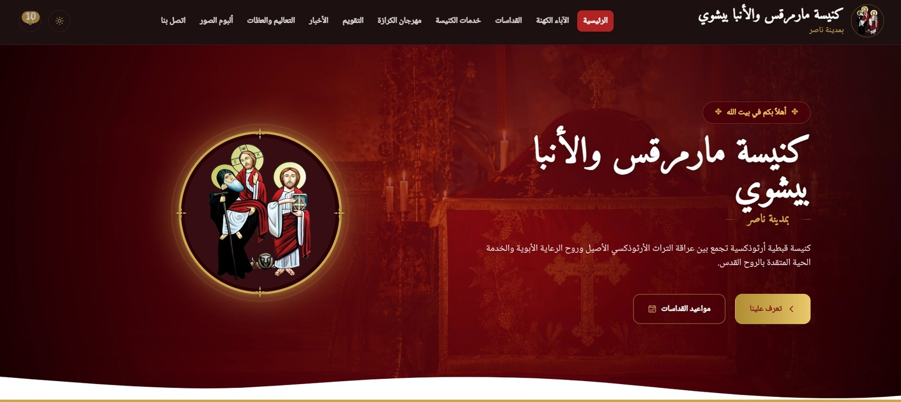
الصفحة الرئيسية لموقع الكنيسة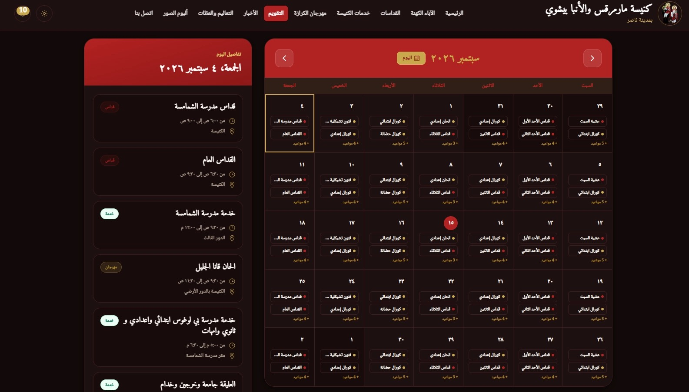
تقويم المواعيد والفعالياتموقع تعريفي وخدمي لكنيسة مارمرقس والأنبا بيشوي بمدينة ناصر. يعرض أنشطة الكنيسة وأخبارها وخدماتها، ويوفر تقويمًا يساعد الزائر على معرفة المواعيد.
تتضمن الواجهة التعريف بالآباء الكهنة وأقسام العظات والألبومات، بهوية بصرية مستوحاة من طابع الكنيسة.
الوظائف الأساسية
- أخبار الكنيسة وأنشطتها
- تقويم ومواعيد القداسات
- عظات وألبومات وخدمات
زيارة موقع المشروع
دور الشركة: تطوير موقع الكنيسة وأقسام الأخبار والمواعيد والخدمات والمحتوى التعريفي.
English content
A church website bringing news, liturgy schedules, services, sermons and albums into one interface.
An information and service website for St. Mark and Anba Bishoy Church in Nasser City. It presents church activities, news and services, with a calendar for discovering schedules.
The interface also introduces the clergy and includes sermons and albums, using a visual identity inspired by the church.
Key features
- Church news and activities
- Calendar and liturgy schedules
- Sermons, albums and services
Visit project website
Development of the church website, news, schedules, services and information sections.
Tomy Barber Shop — حجز خدمات الحلاقة
Tomy Barber Shop — Service Booking
موقع للصالون يتيح اختيار خدمات الحلاقة واليوم والموعد المتاح في رحلة حجز واضحة.
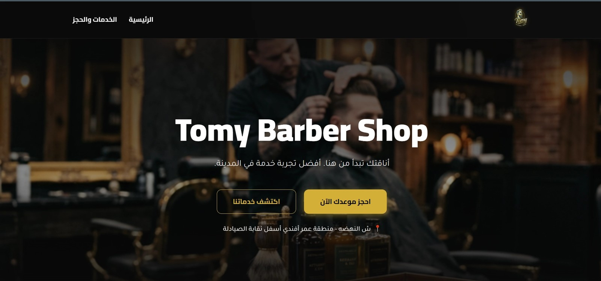
الصفحة الرئيسية للصالون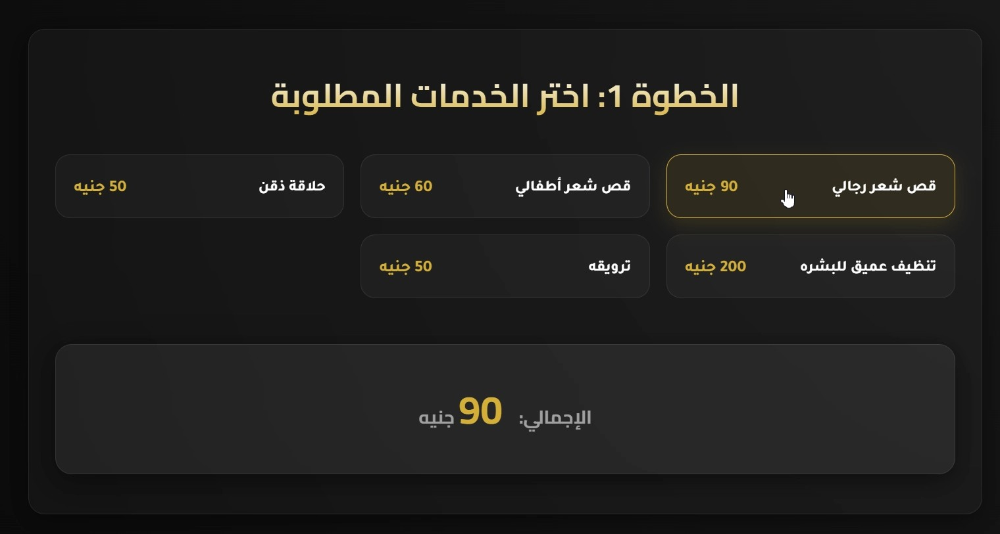
اختيار خدمات الحلاقة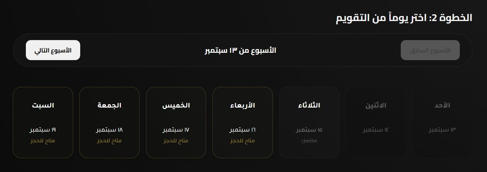
تقويم اختيار موعد الزيارةموقع يجمع هوية الصالون وعرض خدماته مع تجربة حجز خطوة بخطوة. يبدأ الزائر باختيار الخدمات المطلوبة ومعرفة إجماليها، ثم يختار اليوم من التقويم والموعد المتاح.
تعتمد الواجهة على ألوان داكنة ولمسات ذهبية تتماشى مع طابع الصالون، مع تقسيم واضح للخدمات وخطوات الحجز.
الوظائف الأساسية
- اختيار الخدمات وحساب الإجمالي
- تقويم لاختيار يوم الزيارة
- عرض المواعيد المتاحة
زيارة موقع المشروع
دور الشركة: تطوير موقع الصالون وقائمة الخدمات ومسار اختيار اليوم والموعد للحجز.
English content
A salon website with a clear booking journey for selecting grooming services, a day and an available time.
A website combining the salon identity and service presentation with step-by-step booking. Visitors choose services and see their total before selecting a calendar day and an available time.
Dark surfaces and gold accents reflect the salon brand, while clear service and booking sections guide the journey.
Key features
- Service selection and total
- Visit-day calendar
- Available appointment times
Visit project website
Development of the salon website, service list and day/time booking journey.
متاهة الحب — لعبة حوار للمرتبطين
Labyrinth of Love — Couples Conversation Game
تجربة لعب مشتركة للمرتبطين تستخدم أسئلة ومراحل تفاعلية لفتح الحوار حول العلاقة.
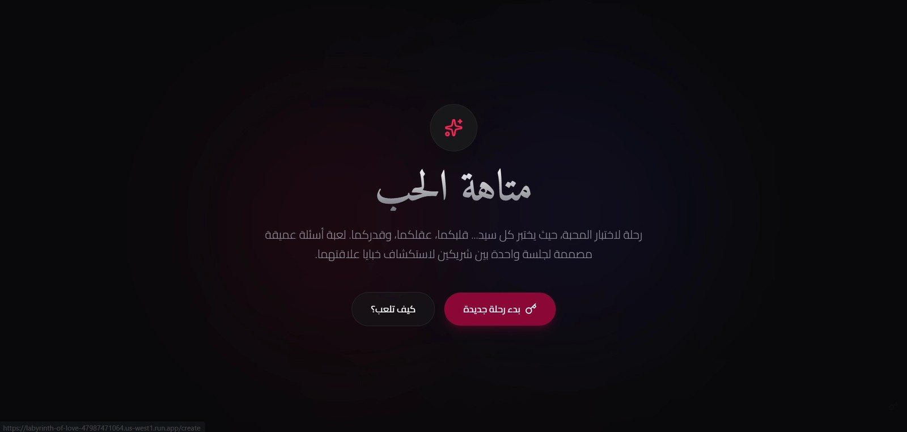
الواجهة الرئيسية لمتاهة الحبلعبة ويب تقدم رحلة مشتركة داخل متاهة تفاعلية. تبدأ التجربة بإنشاء جلسة ودعوة الشريك، ثم الانتقال بين مراحل وأسئلة تتناول جوانب مختلفة من العلاقة.
تظهر صور المصدر خريطة للمراحل وواجهات لطرح الأسئلة والرد عليها، بهوية داكنة ولمسات لونية تميز أطراف التجربة.
الوظائف الأساسية
- جلسة مشتركة ودعوة الشريك
- خريطة مراحل تفاعلية
- أسئلة وردود لفتح الحوار
زيارة موقع المشروع
دور الشركة: تطوير تجربة اللعبة المشتركة وواجهات الجلسة والدعوة وخريطة المراحل والأسئلة.
English content
A shared game for couples using questions and interactive stages to open conversations about their relationship.
A web game presenting a shared journey through an interactive labyrinth. The experience starts with a session and partner invitation, followed by stages and questions covering different aspects of the relationship.
Source screens show a stage map and question/answer interfaces, with a dark visual identity and color accents.
Key features
- Shared session and partner invitation
- Interactive stage map
- Questions and responses for conversation
Visit project website
Development of the shared game experience, session and invitation interfaces, stage map and questions.
إدارة العمال والرواتب — شركة بالإمارات
Workforce & Payroll — UAE Company
برنامج محاسبي يجمع حضور العمال واليوميات والرواتب مع المصروفات والوارد والتقارير الشهرية.
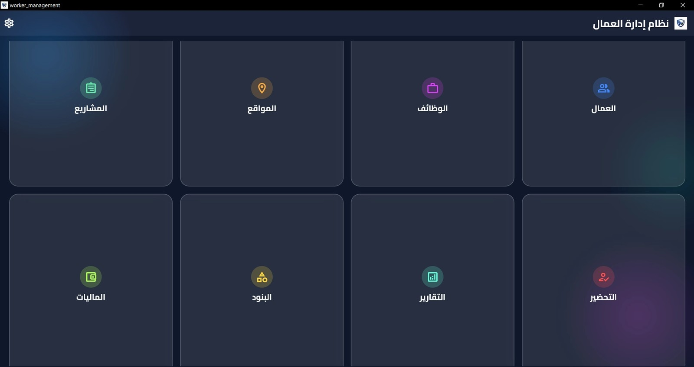
الواجهة الرئيسية لإدارة العمال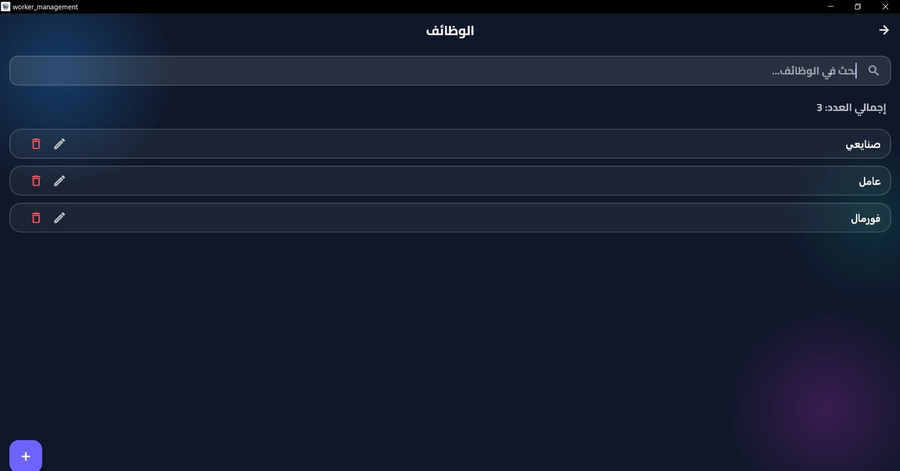
تصنيفات الوظائفبرنامج لإدارة العمال والحسابات في شركة بالإمارات، يربط متابعة الحضور اليومي بقيمة اليومية والراتب المستحق. تتوزع الواجهات بين العمال والوظائف والمواقع والمشاريع.
يشمل النظام تسجيل المصروفات والوارد وعرض التقارير والرواتب، لتجميع متابعات الشهر داخل برنامج واحد.
الوظائف الأساسية
- حضور العمال واليوميات والرواتب
- إدارة الوظائف والمواقع والمشاريع
- الوارد والمصروفات وتقارير الشهر
دور الشركة: تطوير برنامج إدارة العمال والحضور والرواتب والحسابات والتقارير.
English content
An accounting system combining worker attendance, daily rates and payroll with expenses, income and monthly reporting.
A workforce and accounting application for a UAE company, linking daily attendance to daily rates and payroll. Interfaces cover workers, jobs, locations and projects.
The system records expenses and income and presents reports and payroll, bringing monthly follow-up into one application.
Key features
- Worker attendance, daily rates and payroll
- Jobs, locations and projects
- Income, expenses and monthly reports
Development of workforce, attendance, payroll, accounting and reporting interfaces.
خدمة الرجاء — إدارة خدمات المرضى
El Rajaa — Patient Service Management
نظام لإدارة مركز خدمة المرضى ومتابعة الحالات وبنك الدم والأجهزة الطبية والحسابات.
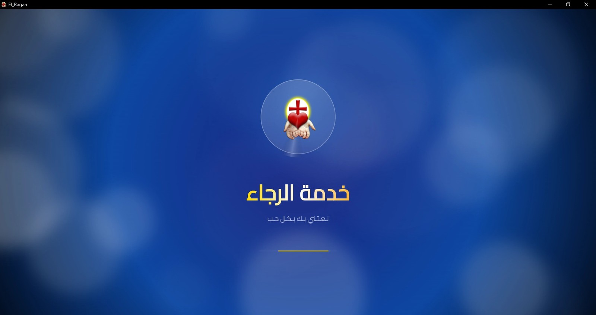
واجهة بدء تشغيل خدمة الرجاء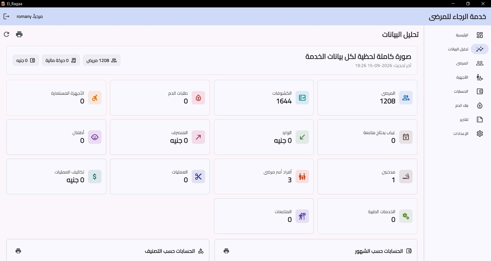
لوحة مؤشرات الخدمة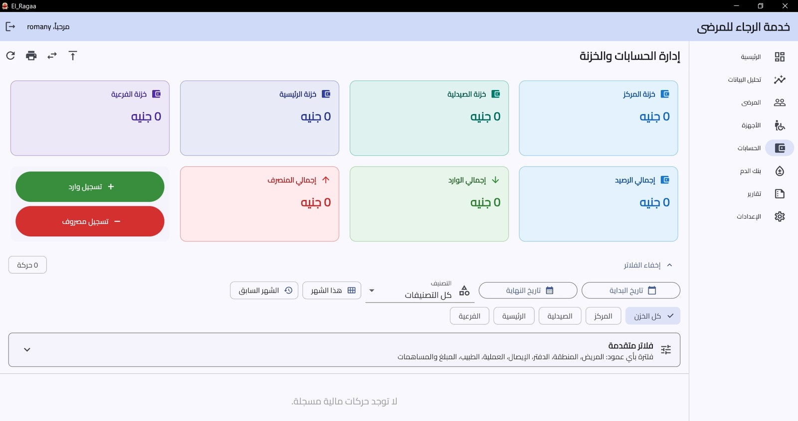
واجهة الحسابات الخالية من بيانات المرضىبرنامج ينظم العمل داخل خدمة الرجاء للمرضى بالمطرانية، ويجمع متابعة الحالات مع الموارد والخدمات المرتبطة بها. تعرض الواجهات إدارة المرضى ومخزن الأجهزة الطبية وبنك الدم والحسابات.
توفر لوحة المؤشرات والتقارير صورة عامة عن نشاط الخدمة، مع أقسام للبيانات والتنظيم تساعد الفريق على متابعة العمل من مكان واحد.
الوظائف الأساسية
- تنظيم خدمات المرضى ومتابعة الحالات
- بنك دم ومخزن أجهزة طبية
- حسابات ومؤشرات وتقارير
دور الشركة: تطوير برنامج إدارة الخدمة وواجهات متابعة المرضى والموارد وبنك الدم والحسابات والتقارير.
English content
A system for a patient service center, case follow-up, blood bank, medical equipment and accounting.
An application organizing El Rajaa patient services at the diocese, connecting case follow-up with related resources and services. Interfaces cover patient management, medical equipment inventory, blood bank and accounting.
Dashboards and reports provide an overview of service activity, with organizational sections for the team’s daily work.
Key features
- Patient services and case follow-up
- Blood bank and equipment inventory
- Accounting, dashboards and reports
Development of service management interfaces for patient follow-up, resources, blood bank, accounting and reports.